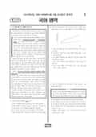

문제지

문항 검색 · 시험지 만들기준비하고 있어요. 열리면 아래 탭에서 바로 쓸 수 있어요.
2023학년도 6월 모의평가 · 2022년 6월 시행
2023학년도 6모 국어 화법과작문 1등급컷은 원점수 87점(추정), 표준점수 최고점은 149점입니다.
원점수 1등급컷은 공식 발표값이 아니라 EBSi·입시기관 값입니다. 등급별 값은 등급컷 표, 출처 구분은 데이터 원칙에 있습니다.

국어 영역 전체 응시자 기준입니다. 한국교육과정평가원이 교육부 보도자료로 공개한 표준점수 도수분포로 계산했습니다.
EBSi 응답자 기준으로 가장 많이 틀린 문항은 14번(2점)이고, 오답률은 88.1%입니다. 상위 15문항 중 4문항은 정답보다 한 오답을 고른 사람이 더 많았습니다(14번: 정답 ① 11.9%, ④ 30.9%). 오답률 50%를 넘은 문항은 14개입니다.
| 순위 | 문항 | 배점 | 오답률 | 정답 | 많이 고른 오답 |
|---|---|---|---|---|---|
| 1 | 14번 | 2점 | 88.1% | ① | ④ 30.9% |
| 2 | 15번 | 2점 | 75.5% | ⑤ | ④ 31.2% |
| 3 | 7번 | 2점 | 72.3% | ① | ④ 54.5% |
| 4 | 13번 | 3점 | 64.8% | ③ | ④ 30.5% |
| 5 | 11번 | 2점 | 64.3% | ② | ④ 34.3% |
| 6 | 9번 | 2점 | 63.9% | ③ | ① 37.9% |
| 7 | 31번 | 3점 | 62.7% | ⑤ | ② 27.7% |
| 8 | 12번 | 2점 | 62% | ④ | ① 33.2% |
| 9 | 16번 | 3점 | 61.8% | ④ | ③ 27.8% |
| 10 | 8번 | 3점 | 60.8% | ② | ⑤ 22.5% |
| 11 | 34번 | 3점 | 57.9% | ① | ③ 21.6% |
| 12 | 10번 | 2점 | 57.7% | ① | ④ 20.8% |
| 13 | 5번 | 2점 | 55.3% | ③ | ② 32.9% |
| 14 | 26번 | 2점 | 53.5% | ① | ④ 15.6% |
| 15 | 45번 | 2점 | 49.2% | ③ | ⑤ 20.6% |
EBSi 가채점 응답자 기준 · 전 문항 중 오답률 상위 15문항
출처: EBSi 역대 등급컷·오답률 공개 화면. 가채점에 참여한 EBSi 이용자 응답이라 전체 응시자 정답률과는 다를 수 있습니다.
발행 기관: 한국교육과정평가원(KICE). 파일 위치: 이 사이트가 보관한 사본. 저작권은 발행 기관에 있습니다. 원본과 다르거나 게시 중단이 필요하면 연락처로 알려 주세요. 등급컷 출처 구분은 데이터 원칙에서 설명합니다.
막대 색은 역대 대비 난이도 · 진한 막대가 이 시험 · 막대를 누르면 그 회차로 이동
| 회차 | 1등급컷 | 표점 최고 | 1등급 표점 | 난이도 |
|---|---|---|---|---|
| 6모2023학년도이 시험 | 87 | 149 | 133 | 매우 어려움 |
| 수능2022학년도 | 82 | 149 | 131 | 매우 어려움 |
| 9모2022학년도 | 100 | 127 | 127 | 매우 쉬움 |
| 6모2022학년도 | 90 | 146 | 132 | 어려움 |
2023학년도 6월 모의평가 국어는 공통과목에서 오답률 50%를 넘긴 문항이 14개였습니다. 독서는 읽기의 양과 어휘력 격차를 다룬 독서론(1~3번), 육가의 사상과 조선 초기 고려 역사서 편찬을 묶은 인문 지문(4~9번), 비타민 K와 '칼슘의 역설'을 다룬 과학 지문(10~13번), 이중차분법을 다룬 경제 지문(14~17번)으로 짜였습니다. 오답률 1·2위는 이중차분법 지문의 14번(88.1%)과 15번(75.5%)이었습니다.
과학 지문은 세 문항이 모두 60%대였습니다. 11번(64.3%)은 '칼슘의 역설'을 정리하는 문항입니다. 칼슘 보충제를 먹으면 혈액 속 칼슘 농도는 오르지만 골밀도는 그대로이고 혈관 석회화가 진행되는데, 이는 혈액의 칼슘이 뼈로 가지 못해 뼈 조직에서는 여전히 칼슘이 부족하다는 뜻입니다. 12번(62.0%)은 비타민 K1(㉠)과 K2(㉡)가 모두 글루탐산을 감마-카르복시글루탐산으로 바꾸는 카르복실화에 관여하므로, 단백질이 칼슘 이온과 결합해 활성화되기 이전 단계에 작용한다는 점을 물었습니다. 13번(64.8%)은 트롬빈의 작용만 억제하고 비타민 K-의존성 단백질에는 작용하지 않는 약물 (다)를 투여해도 프로트롬빈이 트롬빈으로 바뀌는 과정이나 응고 인자와 칼슘 이온의 결합은 억제되지 않는다는 판단을 요구했습니다.
인문 지문의 7번(2점, 72.3%)은 육가와 집현전 학자들이 함께 드러내려 한 생각을 고르는 문항이었고 응답의 54.5%가 한 오답에 몰렸습니다. 육가는 『신어』에서 진의 사상 통제가 낳은 폐해를 들어 현실 정치에 도움이 되는 역사 지식을 강조했습니다. 집현전 학자들은 『치평요람』에서 전쟁과 외교 문제를 부각했습니다. 두 사람 모두 지난 왕조의 흥망을 거울삼아 새 나라를 안정적으로 다스리려 했다는 점이 공통이었습니다.
문학은 「소현성록」(18~21번), 「사시가」·「자도사」와 공선옥 수필 「그 시절 우리들의 집」 갈래 복합(22~27번), 채만식 「미스터 방」(28~31번), 신동엽 「향아」·기형도 「전문가」 현대시(32~34번)였습니다. 「미스터 방」의 초점화를 다룬 31번(62.7%)이 문학에서 가장 많이 틀렸습니다.
26번(53.5%)은 수필 속 '그 집'과 '아파트'를 대비한 문항입니다. '그 집'의 아이들은 굴뚝 연기가 낮게 깔리면 다음 날 비가 온다는 자연의 비밀을 알았지만, 아파트는 그런 비밀을 아예 알 수 없는 공간입니다. 그러니 비밀이 아파트에 감춰져 있다는 선택지는 적절하지 않았습니다. 34번(3점, 57.9%)은 「향아」의 '차라리 그 미개지에로 가자'를 공동체의 터전을 넓혀 순수성을 지키려는 의식으로 읽은 선택지를 걸러내야 했습니다. 그 말은 허위에 물들어 가는 지금의 공동체가 소박하고 건강했던 과거의 모습을 되찾기를 바라는 마음이기 때문입니다.
화법과 작문은 텃밭 가꾸기 사례 발표(35~37번), 비평문을 쓰기 위한 대화와 초고(38~42번), 지역 청소년 감정 관리 프로그램 초고(43~45번)로 구성되었고, 오답률 50%를 넘긴 문항은 없었습니다. 가장 높았던 45번(49.2%)은 초고 [A]가 해결 방안의 두 방향인 '실시 대상 확대'와 '활동 내용 다양화' 가운데 앞의 것만 언급했다는 점을 알아채는 문항이었습니다. 고쳐 쓴 글에는 두 방향이 모두 들어 있으므로, 교사의 조언은 '해결 방안 중 일부만 제시되어 있으니 글에서 다룬 주장을 모두 포함하라'는 것이어야 했습니다.